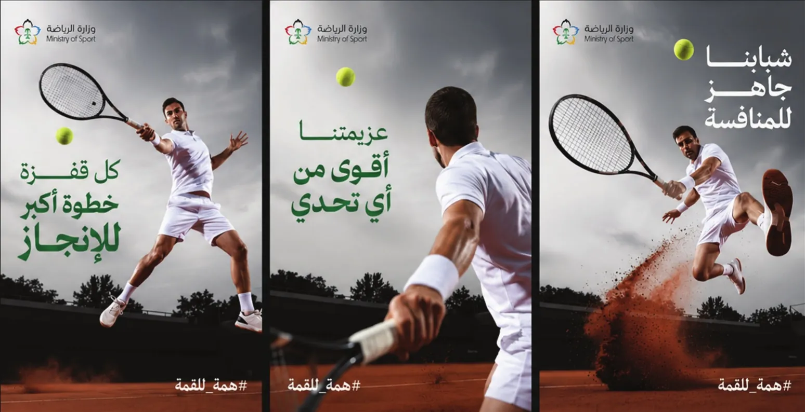
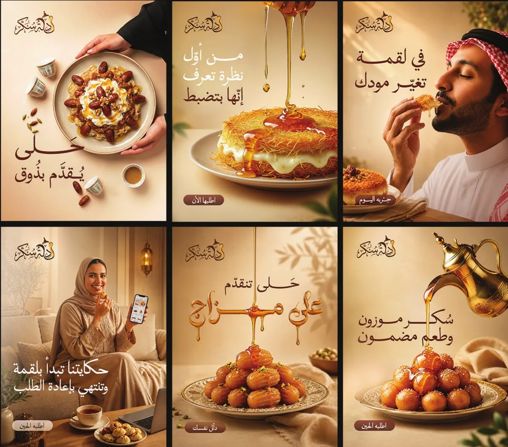
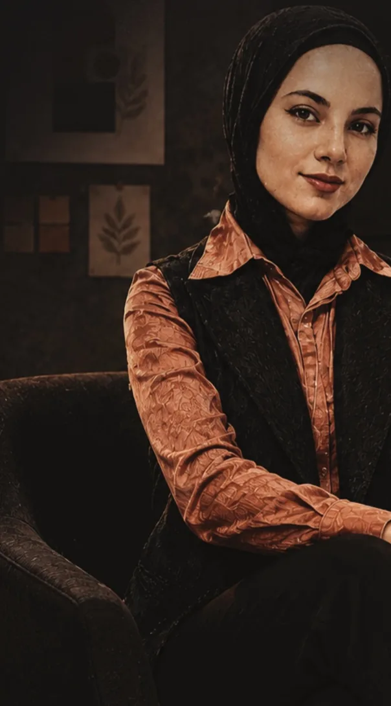

Portfolio · 2019—2026 · Jeddah, Saudi Arabia
Asma Othman
أسماء عثمان
Senior Graphic Designer · Art Direction
Brand identities and campaigns, art‑directed from the first sketch to the final frame.
I’m a graphic designer with seven years across Saudi Arabia, the Gulf, Egypt and Turkey. I shape how brands look, speak and move, from logo and system to campaign and motion.
Selected work
View all projects (13)
01 — Brand Identity
Rashfرشف
A bilingual identity and packaging system for a specialty coffee brand, built on craft, warmth and an earthy palette.
View case study02 — Real Estate Marketing · 2026
ICON Real Estateايكون العقارية
A social media visual system and project-launch campaigns for a Saudi developer, including ICON 19 and ICON 21 in Al Safa, Jeddah.
View case study
03 — Advertising Campaigns · 2024
Tennis Campaignحملة التنس
An awareness campaign promoting tennis and active lifestyles across Instagram, X and Facebook, under the line #همة_للقمة.
View case study
04 — Brand Identity
Zeinaزينة
Identity and packaging for a jewellery brand that celebrates femininity, softness and detail.
View case study
05 — Social Media Design
Dallah Sukkarدلة سكر
A warm social media campaign for a Saudi dessert brand, pairing appetising imagery with playful Arabic headlines.
View case study
06 — Motion & Video Editing · 2026
iCAUR V27إيكار V27
A cinematic social series for the iCAUR V27 SUV, presented as a motion showcase of the full set.
View case studyMotion & Editing
View all projectsReels, launch films and edited showcases, designed, animated and cut in After Effects and Premiere Pro.
Disciplines
13 projects
About
I design brand identities, advertising and social campaigns, print, and motion for companies across Saudi Arabia and the Gulf. My work starts with the brief and the audience, and only then with the visuals.
Good design is not just seen. It is felt.More about me
Journal
Read the journalAll projects
- Rashf — Brand Identity. A bilingual identity and packaging system for a specialty coffee brand, built on craft, warmth and an earthy palette.
- ICON Real Estate — Real Estate Marketing · 2026. A social media visual system and project-launch campaigns for a Saudi developer, including ICON 19 and ICON 21 in Al Safa, Jeddah.
- Tennis Campaign — Advertising Campaigns · 2024. An awareness campaign promoting tennis and active lifestyles across Instagram, X and Facebook, under the line #همة_للقمة.
- Zeina — Brand Identity. Identity and packaging for a jewellery brand that celebrates femininity, softness and detail.
- Dallah Sukkar — Social Media Design. A warm social media campaign for a Saudi dessert brand, pairing appetising imagery with playful Arabic headlines.
- iCAUR V27 — Motion & Video Editing · 2026. A cinematic social series for the iCAUR V27 SUV, presented as a motion showcase of the full set.
- Wasabi — Editorial & Print. Identity and menu design for a sushi restaurant that brings authentic Japanese flavours into a modern dining experience.
- Piattino Café — Brand Identity. A friendly character-led identity and packaging for a café serving hot and cold drinks and cold food.
- ICON 21 Reels — Motion & Video Editing · 2026. Short motion pieces that introduce ICON 21, highlight its features and keep the Instagram feed visually consistent.
- Shahy Clinic — Social Media Design. Social content for a beauty and aesthetics clinic that educates, promotes treatments and builds trust through a soft, feminine look.
- Product Campaigns — Advertising Campaigns. Commercial social designs for headphones, laptops and smartphones, built around one benefit and one clear call to action each.
- Government Infographics — Editorial & Print. Infographics on digital transformation and the entertainment sector that turn dense figures into a clear visual story.
- Logo Collection — Brand Identity. A selection of logos for different industries: hospitality, beauty, mobility, marketing and more.